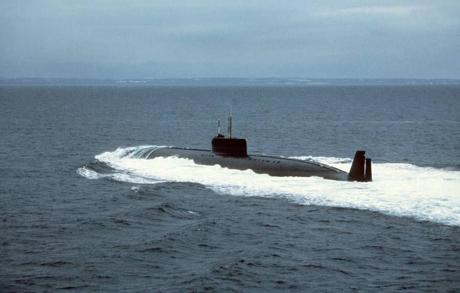

Лодка, которую строили из титана
Читается подряд. Нажми на удар — откроется подробный разбор с источниками.
В декабре 1959 года правительство поручило ЦКБ-16 создать скоростную подводную лодку нового поколения — с титановым корпусом и пуском крылатых ракет из-под воды.Узнать подробнееСвернуть
Постановление ЦК КПСС и Совета министров называлось «О создании новой скоростной подводной лодки, новых типов энергетических установок и научно-исследовательских, опытно-конструкторских и проектных работ для подводных лодок». Главным конструктором назначили Николая Исанина, позже его сменил Николай Шульженко.
Источники: «Советская субмарина К-162 установила рекорд скорости» (rus.team); «Книга рекордов Вооружённых сил РФ», Минобороны России (главный конструктор Н. Н. Исанин).
Лодку строили против авианосцев: она должна была подойти к ним быстро и ударить ракетами «Аметист», не всплывая.Узнать подробнееСвернуть
Противокорабельную ракету П-70 «Аметист» для неё начали проектировать в 1960 году. Ракете хватало около 80 километров, поэтому лодке и нужна была скорость: выйти на дистанцию удара раньше, чем её найдут.
Источники: rus.team («для нанесения ракетных и торпедных ударов по авианосным соединениям противника»); «Подлодка с титановым корпусом проекта 661 „Анчар“» (shipshub.com).
Конструкторам запретили брать готовые приборы и решения с других лодок: всё на «Анчаре» придумывали заново.Узнать подробнееСвернуть
Решение растянуло сроки и удорожило работу, зато корабль получился ни на что не похожим. Над ним трудились больше 400 организаций.
Источники: Севмаш через sudostroenie.info («Конструкторам официально запретили использовать „традиционные“ технические решения»; «более 400 организаций»); rus.team.
Корпус сделали из титанового сплава — впервые в мировом подводном кораблестроении.Узнать подробнееСвернуть

К-222 (бывшая К-162), вид с кормы, 26 октября 1983 года. Фото PH2 D. Beech, ВМС США (DN-ST-84-01576) — общественное достояние. Титан прочен, лёгок и не магнитится. Первые корпусные конструкции из него Севмаш начал делать в 1962 году; по сути, параллельно с лодкой рождалась новая отрасль металлургии.
Источники: rus.team («титана, который впервые применялся в мировом подводном кораблестроении»); Севмаш через sudostroenie.info («строительство атомохода из титанового сплава»); shipshub.com.
Титан варили в аргоне, а цех на время стройки превратился в лабораторию: стены отмыли и выкрасили в светлое, рабочие ходили в белых робах.Узнать подробнееСвернуть
Сварка шла вольфрамовыми электродами в среде аргона, часть узлов — в герметичных камерах, где сварщики работали в подобии водолазных костюмов. Скопившийся у пола аргон однажды стоил жизни рабочим, готовившимся к сварке в цистерне, — после этого ввели контроль состава воздуха.
Источники: Севмаш через sudostroenie.info (светлые стены, белые робы, строжайший контроль); deepstorm.ru, историческая справка К-162 (сварка в аргоне, несчастный случай).
Заложили лодку 28 декабря 1963 года, спустили на воду 21 декабря 1968-го, а приёмный акт подписали 31 декабря 1969 года.Узнать подробнееСвернуть
Заводской номер 501, цех № 42 Северного машиностроительного предприятия в Северодвинске. Построена была всего одна лодка проекта 661. За цену её прозвали «Золотой рыбкой».
Источники: deepstorm.ru; rus.team; Севмаш через sudostroenie.info («По проекту 661 была построена всего одна лодка»; «Золотая рыбка»).
На государственных испытаниях в декабре 1969 года лодка при 80 % мощности реакторов дала 42 узла — вместо 38 по заданию.Узнать подробнееСвернуть
После всплытия оказалось, что за 12 часов полного хода вода сорвала входную дверь ограждения рубки, три лючка в надстройке и обтекатель аварийного буя, а плоская палуба надстройки стала выпуклой.
Источники: rus.team («42 узла, вместо спецификационных 38 узлов»); deepstorm.ru (повреждения после 12-часового полного хода).
18 декабря 1970 года комиссия решилась дать максимальный ход: для этого заблокировали аварийную защиту турбин и перевели их на ручное управление.Узнать подробнееСвернуть
Манёвр согласовали председатель комиссии контр-адмирал Фёдор Маслов, главный конструктор Николай Шульженко и ответственный сдатчик Кузьма Палкин. На пост управления турбинами встал инженер Кировского завода Александр Скворцов. Командовал лодкой Юрий Голубков.
Источники: deepstorm.ru; rus.team.
При мощности реакторов 97 % лодка прошла под водой со скоростью 44,7 узла — 82,78 км/ч — на глубине 100 метров.Узнать подробнееСвернуть
Находка дняЛишние 17 % мощности сверх испытательных 80 % дали всего 2,7 узла: сопротивление воды растёт быстрее скорости. «Книга рекордов Вооружённых сил» Минобороны записала: «Подводная лодка К-162 проекта на испытаниях 18 декабря 1970 года установила мировой рекорд скорости подводного хода — 44,7 узлов. До настоящего времени этот рекорд не превзойден».
Источники: «Книга рекордов ВС РФ», статья «Самая быстроходная в мире атомная подводная лодка» (record.mil.ru, копия web.archive.org); deepstorm.ru; rus.team; Севмаш через sudostroenie.info.
Скорость мерили приборами самой лодки: подтвердить её на мерной линии гидрографическими судами в 1971 году не дал шторм.Узнать подробнееСвернуть
Заход на Мотовскую мерную линию хотели приурочить к открытию съезда КПСС, но суда не вышли в море, а потом донесение отменили. В том же выходе при 100 % мощности сделали два галса и получили 44,85 узла, на третьем не справились с управлением турбинами и прекратили опасный режим. В документах остались 44,7.
Источник: deepstorm.ru, историческая справка К-162 (февраль — март 1971 года).
Платой за скорость стал шум: выше 35 узлов вода ревела о корпус так, что в центральном посту было до 100 децибел, и лодка теряла скрытность.Узнать подробнееСвернуть
«Лодка при такой скорости мало что „слышит“, при этом сама шумит очень сильно», — объяснил эксперт Андрей Фролов. Поэтому следующие лодки проектировали тише и дешевле ценой хода: прямым развитием стал проект 670 «Скат».
Источники: rus.team (шумы «до 100 децибел», «лишал лодку скрытности», проект 670); Радио Sputnik, 05.07.2018 (А. Фролов).
Осенью 1971 года в Атлантике К-162 шла за американским авианосцем «Саратога», и оторваться от неё он не смог.Узнать подробнееСвернуть
Поход длился с 25 сентября по 4 декабря 1971 года; на борту было 129 человек вместо 83 по штату. В 1978 году лодка получила номер К-222, в 1989-м её вывели из состава флота. Рубку легендарного корабля Севмаш собирается поставить в Северодвинске как памятник.
Источники: deepstorm.ru («преследуя ударный авианосец США „Саратога“»); shipshub.com (авианосец шёл полным ходом, около 30 узлов); Севмаш через sudostroenie.info (рубка — памятный объект).